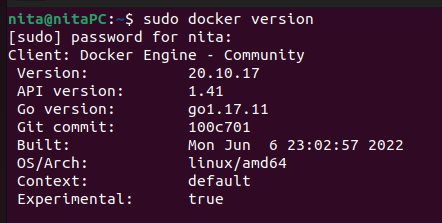
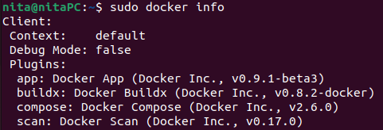
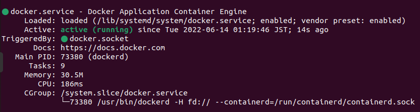
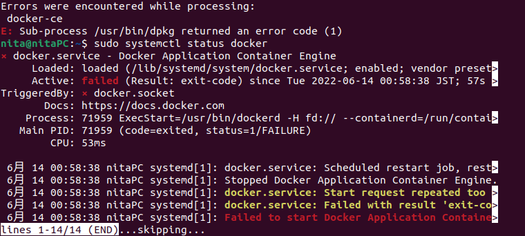

【Ubuntu 22.04】How to use Docker and Git to develop apps locally


Index
- What is Docker
- Steps to run a test container
- Check local environment
- Install Docker and Docker Compose
- How to organize the contents
- To run a test container
- Tips
- Summary
What is Docker
Docker is a tool to provide environments where places which store programs can be separated from host OS.
By doing this, it is possible to develop programs without messy for your local environment, and allow your programs to work well on other OS.
Steps to run a test container
I will introduce how to set up environments to develope programs locally.
Today, I will intstall Docker Engine for Linux.
When I installed Docker and other programs, I refer to Community & ばったんの技術ブログ
Check local environment
This is my local environment.
 I assume that you have installed Git.
Install Docker and Docker Compose
First, write the following commands in your command line to update existing packages
$ sudo apt update
To install programs through http, you will install following programs.
$ sudo apt install apt-transport-https ca-certificates curl software-properties-common
To add GPG key in your system
$ curl -fsSL https://download.docker.com/linux/ubuntu/gpg | sudo apt-key add -
To add Docker repository to apt source
$ sudo add-apt-repository "deb [arch=amd64] https://download.docker.com/linux/ubuntu focal stable"
To update,
$ sudo apt update
From now on, you will install Docker.
But in my case, I cannot success in the following process. So, I will introduce the basic process and my way.
Here is the basic process
$ sudo apt install docker-ce
To check whether it is going well
$ sudo systemctl status docker
If it goes well,
However, in my case...
According to the error message, docker-ce has something wrong.
So before reinstall docker-ce, you will disconnect the network. The following idea comes from the site.
$ sudo systemctl restart systemd-networkd,service
$ sudo apt remove docker-ce
$ sudo apt install docker-ce
$ sudo systemctl status docker.service
After the above commands, my terminal was like this.
Next, you will install Docker Compose.
The prugin is so useful because the plugin can allow the user to organize & manage several containers by writing one ymal file.
Before installing, you will check whether you have already installed or not.
If you use an old docker, may be you have the old version of Docker Compose (Compose V1).
$ sudo docker compose --version
If not, you will install in the following way. When you will install Docker Compose in the second line, you should check the version of Docker Compose (here, v2.6.0).
$ mkdir /usr/local/lib/docker/cli-plugins
$ curl -SL https://github.com/docker/compose/releases/download/v2.6.0/docker-compose-linux-x86_64 -o /usr/local/lib/docker/cli-plugins/docker-compose
$ chmod +x /usr/local/lib/docker/cli-plugins/docker-compose
$ docker compose version
When you can see the following output, you have done the all setting.
Docker Compose version v2.6.0
How to organize the contents
From now on, we will write codes on yml file and test files (.html and .css).
My codes is available on the page of my GitHub. So, check the these codes.
When writing my codes, I refer to the site.
To run a test container
To run your containers, you will put the following command
$ cd ~/FOLDERNAME
$ sudo docker compose up -d
The output will be...
Name Command State Ports
------------------------------------------------
In your brouser, by inputting "localhost:8000", you can see the web page.
If you start or stop running, you can input the commands
$ sudo docker compose start
$ sudo docker compose stop
Tips
- When writing yml files, you have to indent two spaces.
- There are different version for Docker Compose like V1 and V2.
- There are several types for Docker. For linux users, Docker Engin. For Windows and macOS, Docker Desktop.
- WIthout dockerhub, you can enjoy the benefits of Docker if you develop your programms by yourself.
Summary
Done!!! If you have a comment or question, feel free to send my e-mail!!!